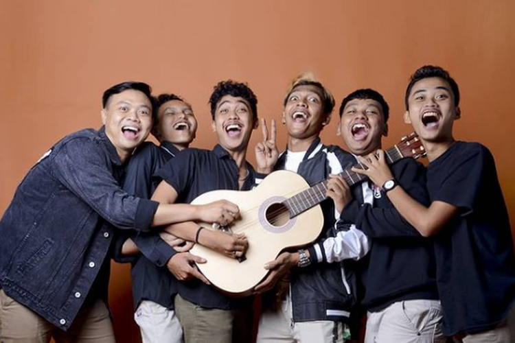
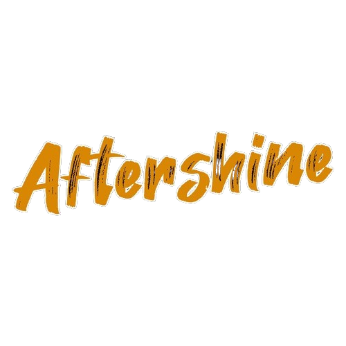

Klik logo untuk menampilkan penjelasan
Aftershine adalah sebuah grup musik bergenre pop Jawa dan koplo asal Indonesia. Grup musik ini berasal dari Kabupaten Sleman, Daerah Istimewa Yogyakarta.
Video Klip Kalah
Video Klip Kalah 2
Video Klip Kisinan
Audio Kalah
Audio Kalah 2
Audio Kisinan